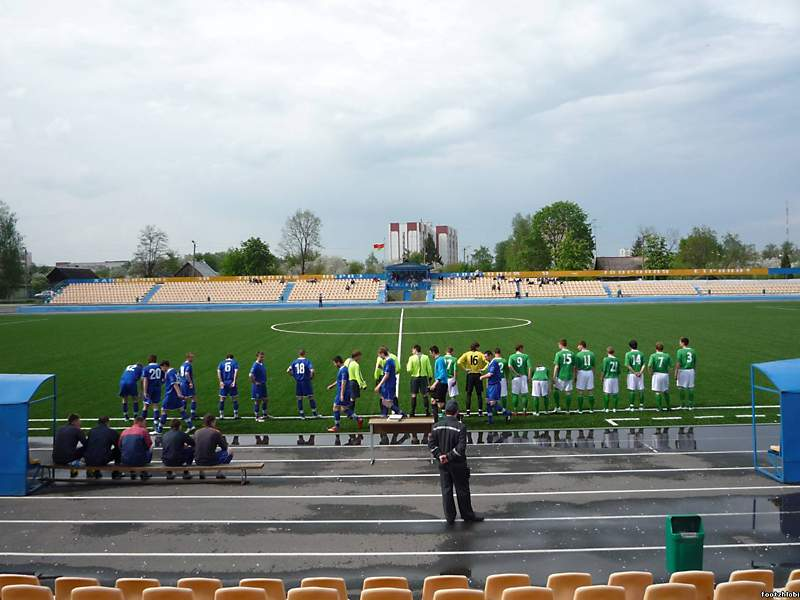

Главная площадка для футбола
Городской стадион по праву считается сердцем спортивной жизни Жлобина. Это главная многофункциональная арена города, на которой проходят самые зрелищные и важные события — от захватывающих футбольных баталий до масштабных городских праздников и спартакиад.
Стадион располагает профессиональным футбольным полем с качественным современным покрытием, а вокруг него обустроены легкоатлетические беговые дорожки. Именно здесь проходят районные и областные турниры, а также сдаются нормативы по легкой атлетике. Трибуны стадиона вмещают множество болельщиков, создавая неповторимую атмосферу поддержки на каждом матче.
Это место имеет огромное значение для воспитания молодого поколения спортсменов. На этой арене делают свои первые шаги юные футболисты, здесь закаляется характер и воспитывается воля к победе будущих чемпионов. Стадион открыт не только для профессионалов, но и для всех жителей и гостей города, желающих приобщиться к здоровому образу жизни, провести время с семьей или поболеть за любимую команду.